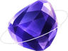

<!doctype html>
<html lang="ko">
<head>
<meta charset="utf-8">
<meta name="viewport" content="width=device-width,initial-scale=1">
<meta name="robots" content="noindex,nofollow">
<title>Iolite 디자인 보드</title>
<link rel="stylesheet" href="https://cdn.jsdelivr.net/gh/sun-typeface/SUIT@2/fonts/variable/woff2/SUIT-Variable.css">
<link rel="stylesheet" href="https://fonts.googleapis.com/css2?family=Noto+Serif+KR:wght@800&amp;text=Iolite&amp;display=swap">
<style>
/* Iolite design board: every screen as a named 390x844 frame on one page, for one Figma capture.
   Concept: the jeweler's atelier as a light metaphor (docs/research/design-direction.md). Labels stay plain Korean. */
.t-dark{--bg:#12101C;--surface:#1C1930;--s2:#262240;--line:#2D2945;--ink:#F1EEFA;--sub:#B0AAC7;--mute:#8A85A0;--pri:#A99CFF;--onpri:#14102A;--tint:#2A2546;--num:#D3CDFF;--water:#5BB0E6;--violet:#9A82FF;--honey:#F0B93A;--honeyInk:#F6D27A;--honeyTint:#3A2D12;--waterTint:#172838;--empty:#6C6690;--uncut:#2A2639;--uncut2:#252133;--table:#171522;--gap:#12101C;--wash:radial-gradient(120% 40% at 100% 0%,rgba(150,160,255,.16),transparent 70%),radial-gradient(90% 30% at 0% 100%,rgba(232,180,100,.06),transparent 70%);--sheen:linear-gradient(160deg,rgba(150,140,255,.08),rgba(120,150,255,0) 45%);--hero:linear-gradient(135deg,#231E64 0%,#352F8E 34%,#3F56AE 70%,#5470BE 100%)}
.t-light{--bg:#F6F3FA;--surface:#FFFFFF;--s2:#EEEAF6;--line:#E4DFEE;--ink:#1B1730;--sub:#5E5873;--mute:#7A7490;--pri:#5443C8;--onpri:#FFFFFF;--tint:#ECE8FA;--num:#2B2674;--water:#2F86BF;--violet:#6E4FD6;--honey:#D9981A;--honeyInk:#8A5F07;--honeyTint:#FBF0D8;--waterTint:#E3F0F8;--empty:#9892B0;--uncut:#E7E2F3;--uncut2:#DED8EE;--table:#FBFAFE;--gap:#F6F3FA;--wash:radial-gradient(120% 40% at 100% 0%,rgba(110,90,230,.10),transparent 70%),radial-gradient(90% 30% at 0% 100%,rgba(230,170,80,.07),transparent 70%);--sheen:linear-gradient(160deg,rgba(84,67,200,.05),rgba(84,100,200,0) 45%);--hero:linear-gradient(140deg,#6652DC 0%,#5443C8 45%,#3D3EA6 100%)}
*{box-sizing:border-box}
body{margin:0;background:#0B0A10;color:#ddd;font-family:"SUIT Variable",-apple-system,sans-serif}
.board{display:flex;flex-wrap:wrap;gap:64px 48px;padding:48px}
.fwrap{display:flex;flex-direction:column;gap:10px}
.fname{font-size:13px;color:#9a96ad;font-weight:600}
.frame{width:390px;height:844px;overflow:hidden;position:relative;background:var(--wash),var(--bg);color:var(--ink);font-family:"SUIT Variable",-apple-system,sans-serif;font-size:15px;line-height:1.5;border-radius:36px;box-shadow:0 0 0 1px #2a2735}
.frame.pc{width:1280px;height:800px;border-radius:16px}
.scr{position:absolute;inset:0;padding:54px 20px 104px;display:flex;flex-direction:column;gap:14px;overflow:hidden}
.hdr{display:flex;align-items:center;gap:10px}
.hdr .logo{width:38px;height:38px;object-fit:contain}
.hdr .word{font-family:"Noto Serif KR",Georgia,serif;font-weight:800;font-size:26px;letter-spacing:-.5px}
.hdr .sync{margin-left:auto;font-size:12px;color:var(--sub)}
.crumbs{display:flex;justify-content:space-between}
.pill{font-size:12px;font-weight:600;color:var(--sub);border:1px solid var(--line);border-radius:999px;padding:5px 11px;background:transparent}
.h1{font-size:24px;font-weight:800;letter-spacing:-.4px;margin:0}
.note{font-size:13px;color:var(--sub);margin:0}
.card{background:var(--sheen),var(--bg);border:1px solid var(--line);border-radius:22px;padding:16px;display:flex;flex-direction:column;gap:10px}
.row{display:flex;justify-content:space-between;align-items:center;gap:8px;font-size:14px}
.row .k{font-weight:600}.row .v{color:var(--sub)}.row .v.ok{color:var(--honeyInk)}
.btn{min-height:44px;border-radius:14px;border:0;background:var(--s2);color:var(--ink);font:600 15px "SUIT Variable";padding:0 16px;display:inline-flex;align-items:center;justify-content:center}
.btn.pri{background:var(--pri);color:var(--onpri);font-weight:800}
.btn.ghost{background:transparent;border:1px solid var(--line)}
.bar{display:flex;gap:8px;flex-wrap:wrap}
.hero{position:relative;border-radius:28px;padding:22px;color:#fff;background:var(--hero);overflow:hidden;display:flex;flex-direction:column;gap:6px;box-shadow:inset 0 1px 0 rgba(255,255,255,.3)}
.hero .eb{font-size:12px;font-weight:700;opacity:.9}.hero .t{font-size:28px;font-weight:800;letter-spacing:-.5px;margin:0}.hero .s{font-size:15px;margin:0;opacity:.95}
.hero .go{margin-top:12px;min-height:46px;border-radius:23px;background:#fff;color:#2B2674;font-weight:800;padding:0 22px;border:0;align-self:flex-start;font-size:15px}
.hero .grain{position:absolute;inset:0;opacity:.18;background-image:repeating-linear-gradient(115deg,rgba(255,255,255,.12) 0 1px,transparent 1px 22px)}
.strip{display:flex;justify-content:space-between;align-items:center;border:1px solid var(--line);border-radius:14px;padding:11px 14px;font-size:13px;color:var(--sub);background:var(--bg)}
.strip b{color:var(--ink);font-size:14px}
.tabbar{position:absolute;left:12px;right:12px;bottom:18px;height:62px;border-radius:31px;background:var(--surface);border:1px solid var(--line);display:flex;padding:4px;gap:2px}
.tabbar span{flex:1;border-radius:22px;display:flex;flex-direction:column;align-items:center;justify-content:center;gap:2px;font-size:11px;color:var(--sub)}
.tabbar span.on{background:var(--tint);color:var(--pri);font-weight:700;box-shadow:inset 0 0 0 1px var(--line)}
.tabbar svg{width:22px;height:22px;stroke:currentColor;fill:none;stroke-width:1.8;stroke-linecap:round;stroke-linejoin:round}
.shelf{display:flex;flex-direction:column;gap:8px}
.shelf .lbl{font-size:12px;font-weight:700;color:var(--sub)}
.stones{display:flex;flex-wrap:wrap;gap:10px;padding-bottom:10px;border-bottom:2px solid var(--line)}
.stone{display:flex;flex-direction:column;align-items:center;gap:2px;font-size:11px;font-weight:700;color:var(--sub)}
.ledger{border:1px solid var(--line);border-radius:18px;padding:14px;display:flex;flex-direction:column;gap:8px;background:var(--sheen),var(--bg)}
.hidden-line{height:10px;border-radius:5px;background:repeating-linear-gradient(90deg,var(--s2) 0 60%,transparent 60% 64%);opacity:.9}
.grade{display:grid;grid-template-columns:repeat(3,1fr);gap:8px}
.grade div{border-radius:16px;padding:10px 4px;text-align:center;font-weight:800;font-size:14px}
.grade small{display:block;font-weight:500;font-size:11px}
.g1{background:var(--waterTint);color:var(--water)}.g2{background:var(--tint);color:var(--pri)}.g3{background:var(--honeyTint);color:var(--honeyInk)}
.ans{background:var(--s2);border-radius:16px;padding:12px 14px;font-size:14px;white-space:pre-line}
.chip{font-size:11px;font-weight:700;border-radius:999px;padding:3px 9px;background:var(--s2);color:var(--sub)}
.chip.v{background:var(--tint);color:var(--pri)}.chip.h{background:var(--honeyTint);color:var(--honeyInk)}.chip.w{background:var(--waterTint);color:var(--water)}
.field{border:1px solid var(--line);border-radius:12px;padding:11px 13px;color:var(--mute);font-size:14px;background:var(--surface)}
.big{font-size:44px;font-weight:800;letter-spacing:-1px;font-variant-numeric:tabular-nums}
.sheet{width:1280px;height:844px}
.sheet .scr{padding:40px;flex-direction:row;flex-wrap:wrap;gap:28px;align-content:flex-start}
.sheet .grp{display:flex;flex-direction:column;gap:10px;min-width:240px}
.ann{font-size:12px;color:var(--mute)}
</style>
</head>
<body>
<div class="board" id="board"></div>
<script>
/* ---- components ---- */
const C={uncut:"var(--uncut)",water:"var(--water)",violet:"var(--violet)",honey:"var(--honey)"};
function stone(states,size=40,label){ // one facet per Notion step; centre turns honey only when every facet is honey
  const n=Math.max(3,states.length), R=size/2-1, r=R*.62, t=R*.34, cx=size/2, cy=size/2, P=(rad,a)=>[cx+rad*Math.cos(a),cy+rad*Math.sin(a)].map(v=>v.toFixed(1)).join(",");
  let g=""; for(let i=0;i<n;i++){ const a0=-Math.PI/2-Math.PI/n+2*Math.PI*i/n, a1=a0+2*Math.PI/n; const st=states[i]||"uncut"; g+=`<polygon points="${P(R,a0)} ${P(R,a1)} ${P(r,a1)} ${P(r,a0)}" fill="${C[st]}" stroke="var(--gap)" stroke-width="${size>60?2:1.2}"/>`; }
  const all=states.length&&states.every(s=>s==="honey"); let tb=""; for(let i=0;i<n;i++){ tb+=P(t+ (r-t)*.0, -Math.PI/2+2*Math.PI*i/n)+" "; }
  const ring=Array.from({length:n},(_,i)=>P(r,-Math.PI/2-Math.PI/n+2*Math.PI*i/n)).join(" ");
  return `<svg width="${size}" height="${size}" viewBox="0 0 ${size} ${size}" aria-hidden="true">${g}<polygon points="${ring}" fill="${all?"var(--honey)":"var(--table)"}" stroke="var(--line)" stroke-width="1"/>${label?`<text x="${cx}" y="${cy+4}" text-anchor="middle" font-size="${size*.24}" font-weight="800" fill="${all?"#3A2D12":"var(--sub)"}">${label}</text>`:""}</svg>`;
}
const pip=(st,w=22)=>{const h=Math.round(w*36/30), c=st&&C[st]; return `<svg width="${w}" height="${h}" viewBox="0 0 30 36"><path d="M15 2l12 14-12 18L3 16z" fill="${c||"none"}" stroke="${c||"var(--empty)"}" stroke-width="2" stroke-linejoin="round"/>${c?`<path d="M15 2l12 14H3z" fill="#fff" fill-opacity=".3"/><path d="M15 16v18L3 16z" fill="#000" fill-opacity=".12"/>`:""}</svg>`;};
const ICON={shelf:'<path d="M4 5h16M4 12h16M4 19h16"/><path d="M7 5v14M12 5v14"/>',today:'<path d="M12 3l8 9-8 9-8-9z"/>',check:'<path d="M5 12.5l4.5 4.5L19 7.5"/>',rev:'<path d="M4 12a8 8 0 1 0 3-6.2"/><path d="M4 4v4h4"/>',tim:'<circle cx="12" cy="13" r="7.5"/><path d="M12 9v4l2.5 2M9.5 3h5"/>',prac:'<rect x="5" y="4" width="14" height="17" rx="2.5"/><path d="M9 9h6M9 13h6M9 17h3"/>'};
const TABS=[["today","오늘"],["check","체크"],["rev","복습"],["tim","타이머"],["prac","실전"],["shelf","서재"]];
const tabbar=on=>`<div class="tabbar">${TABS.map(([k,l])=>`<span class="${k===on?"on":""}"><svg viewBox="0 0 24 24">${ICON[k]}</svg>${l}</span>`).join("")}</div>`;
const hdr=(sync="동기화됨 07:12")=>`<div class="hdr"><span class="word">Iolite</span><span class="sync">${sync}</span></div>`;
const crumbs=()=>`<div class="crumbs"><span class="pill">‹ Iolite · CS 인터뷰 노트</span><span class="pill">사용법</span></div>`;
function brilliant(lit,tone="violet",size=250){ const R=size/2-6, r=R*.8, t=R*.55, c=size/2, P=(rad,a)=>[c+rad*Math.cos(a),c+rad*Math.sin(a)].map(v=>v.toFixed(1)).join(",");
  let g=""; for(let i=0;i<12;i++){ const a0=(-105+30*i)*Math.PI/180, a1=a0+Math.PI/6; g+=`<polygon points="${P(R,a0)} ${P(R,a1)} ${P(r,a1)} ${P(r,a0)}" fill="${i<lit?(i%2?"var(--violet)":"var(--pri)"):(i%2?"var(--uncut)":"var(--uncut2)")}" stroke="var(--gap)" stroke-width="3"/>`; }
  const ring=Array.from({length:12},(_,i)=>P(t,(-90+30*i)*Math.PI/180)).join(" ");
  return `<svg width="${size}" height="${size}" viewBox="0 0 ${size} ${size}">${g}<polygon points="${ring}" fill="var(--table)" stroke="var(--line)"/></svg>`; }
/* ---- sample content (real items from chapter 18) ---- */
const Q="세 기능에 동시성 제어를 골라야 해요. (a) 콘서트 좌석 재고 한 행에 오픈 순간 초당 2,000건 차감 (b) 사내 위키 문서 편집 (c) 잔액 차감. 각각 한 줄 UPDATE, 비관적 락, 낙관적 락 중 무엇이고 왜인가요?";
const A="• (a) stock = stock - 1 WHERE stock >= 1 한 줄 UPDATE. 충돌이 잦아 낙관적 락은 재시도 폭주예요.\n• (b) 낙관적 락(version). 충돌이 드물고, 몇 분 동안 락을 쥐면 남이 다 기다려요.\n• (c) 외부 조회는 트랜잭션 밖에서, 짧은 트랜잭션에서 FOR UPDATE.";
const VQ="(a) 바이럴 게시글 좋아요 수, 한 행에 초당 3,000번 증가 (b) 상품 설명 편집, 한 번에 10분 (c) 공연 예약 확정, 외부 결제 승인 2초. 각각 무엇을 고르고 왜인가요?";
/* ---- frames ---- */
const F=[];
const add=(name,theme,html,cls="")=>F.push({name,theme,html,cls});
add("00 Components / sheet","dark",`<div class="scr">
 <div class="grp"><b>원석 (장마다 하나, 단계마다 한 면)</b><div class="bar">${stone(["uncut","uncut","uncut","uncut","uncut","uncut"],64,"18")}${stone(["water","water","uncut","uncut","uncut","uncut"],64,"18")}${stone(["violet","violet","water","water","uncut","uncut"],64,"18")}${stone(["honey","honey","honey","violet","violet","water"],64,"18")}${stone(["honey","honey","honey","honey","honey","honey"],64,"18")}</div><span class="ann">깎지 않음 → 물빛(읽음) → 보랏빛(떠올림 성공) → 꿀빛(간격 두고 다시 성공). 가운데는 모든 면이 꿀빛일 때만 꿀빛.</span></div>
 <div class="grp"><b>작은 보석 (주간 회차)</b><div class="bar">${pip("honey",26)}${pip("honey",26)}${pip("violet",26)}${pip(null,26)}${pip(null,26)}</div></div>
 <div class="grp"><b>브릴리언트 타이머 (12분 = 12면)</b>${brilliant(7,"violet",140)}</div>
 <div class="grp" style="width:300px"><b>장부 카드 (요약 숨김)</b><div class="ledger"><div class="row"><span class="k">${pip("violet",16)} 2회차 · 4~7단계</span><span class="v">다음 10.22</span></div><div class="hidden-line"></div><div class="hidden-line" style="width:70%"></div><div class="bar"><span class="btn">떠올려 보기</span></div></div></div>
 <div class="grp" style="width:300px"><b>채점 버튼 (다음 간격 표시)</b><div class="grade"><div class="g1">못 함<small>내일</small></div><div class="g2">반쯤<small>3일 뒤</small></div><div class="g3">맞음<small>7일 뒤</small></div></div></div>
 <div class="grp" style="width:330px"><b>지금 할 것 카드</b><div class="hero"><div class="grain"></div><span class="eb">지금 할 것</span><p class="t">이 장 2/5회차</p><p class="s">18장 트랜잭션 · 3회차</p><button class="go">블록 준비</button></div></div>
 <div class="grp"><b>모션</b><span class="ann">자르기(cut): 상태가 바뀔 때 180ms 면 채우기 · 빛 받기(catch the light): 무언가 얻었을 때만 한 번 반짝 + 숫자 올라감 · reduce-motion이면 둘 다 즉시 전환</span></div>
</div>`,"sheet");
add("01 서재 / home shelf / dark","dark",`<div class="scr">${hdr()}<p class="note">서재 · 공부할 노트를 골라요</p>
 <div class="hero"><div class="grain"></div><span class="eb">노트</span><p class="t" style="font-size:24px">CS 인터뷰 노트</p><p class="s">네트워크 · OS · DB · 시스템 디자인 · 알고리즘 · AI</p><div class="bar" style="margin-top:8px">${pip("honey",20)}${pip("honey",20)}${pip("violet",20)}${pip(null,20)}${pip(null,20)}${pip(null,20)}</div><span class="s" style="font-size:13px">본 경로 40장 · 31/222회차 · 통과한 장 4</span></div>
 <div class="card"><b>요약 서재</b><p class="note">한 줄 요약 128장 · 오늘 떠올릴 카드 6장</p><div class="shelf"><span class="lbl">4부 · 데이터베이스</span><div class="stones">${["17","18","19","20"].map((n,i)=>`<span class="stone">${stone([["honey","honey","violet","water","uncut"],["honey","violet","violet","water","water","uncut"],["water","water","uncut","uncut"],["uncut","uncut","uncut","uncut","uncut"]][i],44)}${n}</span>`).join("")}</div></div><span class="btn ghost">서재 열기</span></div>
 <div class="card" style="border-style:dashed"><b>새 노트 넣기</b><p class="note">다른 요약 노트도 같은 방식으로 꽂을 수 있어요.</p></div></div>`);
add("02 서재 / shelves / dark","dark",`<div class="scr">${hdr()}${crumbs()}<p class="h1">요약 서재</p><p class="note">원석의 면 하나가 한 단계예요. 점선은 아직 깎지 않은 장이에요.</p>
 ${[["1부 · 네트워크",["01","02","03","04","05","06","07","08"]],["4부 · 데이터베이스",["17","18","19","20"]],["6부 · 알고리즘",["30","31","32","33","34","35","36"]]].map(([nm,ns],k)=>`<div class="shelf"><span class="lbl">${nm}</span><div class="stones">${ns.map((n,i)=>`<span class="stone">${stone(Array.from({length:4+(i%3)},(_,j)=>j<((i+k)%4)?(j<1?"honey":j<2?"violet":"water"):"uncut"),40)}${n}</span>`).join("")}</div></div>`).join("")}
 <div class="strip"><b>떠올릴 카드 6장</b><span>오늘</span></div>${tabbar("shelf")}</div>`);
add("03 서재 / chapter ledger / dark","dark",`<div class="scr">${hdr()}${crumbs()}<div class="bar" style="align-items:center">${stone(["honey","violet","violet","water","water","uncut"],64,"18")}<div><p class="h1" style="font-size:20px">18장 트랜잭션</p><p class="note">5회차 · 요약 4장 · 떠올림 2장</p></div></div>
 ${[["1회차 · 1~3단계","honey","다음 11.02"],["2회차 · 4~7단계","violet","다음 10.22"],["3회차 · 8~9단계","water","오늘"]].map(([t,s,d])=>`<div class="ledger"><div class="row"><span class="k">${pip(s,16)} ${t}</span><span class="v">${d}</span></div><div class="hidden-line"></div><div class="hidden-line" style="width:60%"></div><div class="bar"><span class="btn">떠올려 보기</span></div></div>`).join("")}
 <div class="ledger" style="border-style:dashed;opacity:.7"><div class="row"><span class="k">4회차 · 10단계</span></div><p class="note">아직 요약이 없어요. 이 회차를 읽으면 여기에 꽂혀요.</p></div>${tabbar("shelf")}</div>`);
add("04 서재 / card recall-reveal / dark","dark",`<div class="scr">${hdr()}${crumbs()}<p class="note">18장 · 2회차 · 4~7단계</p><div class="card"><p class="note">무엇을 배웠는지 먼저 떠올려요.</p><div class="field">떠올린 것 (소리 내어도 돼요)</div>
 <div class="ans">10.19 · 격리 수준을 올리면 이상 현상이 줄지만 동시성이 떨어져요. 왜: 잠금 범위가 넓어지니까.\n10.26 · 고쳐 씀 · REPEATABLE READ는 같은 행 재조회만 막고, 팬텀은 갭 락이 막아요.</div>
 <div class="grade"><div class="g1">못 함<small>내일</small></div><div class="g2">반쯤<small>3일</small></div><div class="g3">떠올림<small>7일 뒤</small></div></div>
 <div class="field">더 나은 한 줄로 고쳐 쓰기</div><div class="bar"><span class="btn ghost">노션에서 이 회차</span><span class="btn ghost">30초 체크 3개</span></div></div>${tabbar("shelf")}</div>`);
add("05 오늘 / workbench / dark","dark",`<div class="scr">${hdr()}${crumbs()}<p class="note">10월 19일 일 · 3주차</p>
 <div class="hero"><div class="grain"></div><span class="eb">지금 할 것</span><p class="t">이 장 2/5회차</p><p class="s">18장 트랜잭션 · 3회차</p><div class="bar"><button class="go">블록 준비</button><span class="pill" style="color:#fff;border-color:rgba(255,255,255,.5);align-self:flex-end">노션 8단계</span></div></div>
 <div class="card"><div class="row"><b>이번 주</b><span class="v">연속 3주</span></div><div class="bar">${pip("honey",24)}${pip("honey",24)}${pip("honey",24)}${pip("violet",24)}${pip(null,24)}${pip(null,24)}</div>
 <div class="row"><span class="k">회차</span><span class="v">3 / 4~6</span></div><div class="row"><span class="k">복습</span><span class="v ok">오늘 0문항 · 토 테스트</span></div><div class="row"><span class="k">실전</span><span class="v">1 / 3</span></div>
 <div class="strip"><b>다음 할 것</b><span>다음 회차 1블록</span></div></div>${tabbar("today")}</div>`);
add("06 오늘 / done / dark","dark",`<div class="scr">${hdr()}${crumbs()}<div class="card" style="align-items:center;text-align:center;padding:28px 16px">${stone(["honey","honey","violet","violet","water","uncut"],96,"18")}<p class="h1" style="font-size:20px">오늘 몫을 했어요</p><p class="note">다음 복습은 내일 07:00에 6문항이 기다려요. 더 하고 싶으면 실전 1문제.</p><span class="btn ghost">실전 1문제</span></div>${tabbar("today")}</div>`);
add("07 타이머 / read / dark","dark",`<div class="scr">${hdr()}${crumbs()}<p class="note" style="text-align:center">읽기 · 18장 3회차 · 8단계</p><div style="display:flex;justify-content:center;position:relative">${brilliant(7)}<span class="big" style="position:absolute;top:96px">04:48</span></div>
 <p class="note" style="text-align:center">12면이 다 차면 다음 소제목까지만 읽고 한 줄 요약.</p><div class="bar" style="justify-content:center"><span class="btn ghost">잠시 멈춤</span><span class="btn ghost">일찍 끝내기</span><span class="btn ghost">노션 8단계</span></div>${tabbar("tim")}</div>`);
add("08 타이머 / paused / dark","dark",`<div class="scr">${hdr()}${crumbs()}<div style="display:flex;justify-content:center;opacity:.5;position:relative">${brilliant(7)}<span class="big" style="position:absolute;top:96px">04:48</span></div>
 <div class="card"><b>잠시 멈춤 · 4분째</b><p class="note">3분이 넘었어요. 돌아올 수 있으면 지금 다시 시작해요.</p><div class="field">어디까지 읽었는지 한 줄</div><div class="bar"><span class="btn pri">다시 시작</span></div></div>${tabbar("tim")}</div>`);
add("09 타이머 / summary / dark","dark",`<div class="scr">${hdr()}${crumbs()}<p class="note" style="text-align:center">멈춤 질문 · 이 블록이 원석의 한 면이 돼요</p><div style="display:flex;justify-content:center">${brilliant(12,"honey",200)}</div>
 <div class="card"><div class="field" style="min-height:70px">방금 읽은 것을 한 문장으로</div><div class="field">왜 그런지 한 줄</div><div class="bar"><span class="btn pri">기록하고 2분 쉬기</span><span class="btn">회차 끝냄</span></div></div>${tabbar("tim")}</div>`);
add("12 체크 / quiz / dark","dark",`<div class="scr">${hdr()}${crumbs()}<div class="row"><span class="v">18장 · 적용 · 꼬리 2</span><span class="v">3 / 5</span></div><div class="card"><p style="margin:0;font-weight:700">${Q}</p>
 <div class="field" style="min-height:64px">내 답</div><div class="field">왜냐하면 …</div><span class="btn pri" style="opacity:.5">이유를 적으면 정답이 열려요</span></div>${tabbar("check")}</div>`);
add("13 체크 / reveal / dark","dark",`<div class="scr">${hdr()}${crumbs()}<p class="note">내 이유: 충돌이 잦으면 낙관적 락이 재시도로 느려지니까</p><div class="ans">${A}</div>
 <div class="card" style="gap:6px"><p class="note"><b>언제 답이 바뀌나</b> · (a)에서 차감 전에 복잡한 검증이 필요하면 짧은 비관적 락으로 가요.</p><p class="note"><b>다른 장과 연결</b> · 21장: 선착순 쿠폰도 조건부 차감 한 줄로 막아요.</p></div>
 <p class="note">답과 이유가 둘 다 맞았나요?</p><div class="grade"><div class="g1">틀림<small>내일</small></div><div class="g2">반쯤<small>내일</small></div><div class="g3">맞음<small>3일 뒤</small></div></div>${tabbar("check")}</div>`);
add("15 복습 / variant / dark","dark",`<div class="scr">${hdr()}${crumbs()}<div class="row"><span class="v">18장 · <b style="color:var(--violet)">응용: 둘 중 선택</b></span><span class="v">4 / 10</span></div><div class="card"><p style="margin:0;font-weight:700">${VQ}</p><p class="note">같은 개념, 새 상황이에요. 외운 답은 통하지 않아요.</p>
 <div class="field" style="min-height:64px">내 답</div><div class="field">왜냐하면 …</div><span class="btn pri">정답 보기</span><span class="pill" style="align-self:flex-end">문제 이상해요</span></div>${tabbar("rev")}</div>`);
add("16 실전 / list / dark","dark",`<div class="scr">${hdr()}${crumbs()}<div class="bar"><span class="chip v">다시 풀 날 2</span><span class="chip">PC 목록 1</span><span class="chip">모의고사</span><span class="chip">드릴</span></div>
 ${[["백준 1806 부분합","Gold IV · 핵심","A · 30일","h"],["LeetCode 76 최소 윈도","Hard · 도전","C · 오늘","v"],["백준 2470 두 용액","Gold V · 핵심","목표 25분",""]].map(([t,s,c,k])=>`<div class="ledger"><div class="row"><span class="k">${t}</span><span class="chip ${k}">${c}</span></div><p class="note">${s}</p></div>`).join("")}${tabbar("prac")}</div>`);
add("18 서재 / stats & settings / dark","dark",`<div class="scr">${hdr()}${crumbs()}<div class="card"><b>최근 8주</b><div style="display:flex;align-items:flex-end;gap:10px;height:90px">${[3,5,4,6,2,5,6,4].map((v,i)=>`<div style="flex:1;height:${v*13}px;border-radius:6px;background:${i===7?"var(--pri)":"var(--s2)"}"></div>`).join("")}</div></div>
 <div class="card"><b>화면 모드</b><div class="bar"><span class="btn pri">다크</span><span class="btn">라이트</span><span class="btn">기기 설정</span></div></div><div class="card"><b>읽을 범위</b><p class="note">본 경로 40장 · 부를 고르면 그 부만 따라가요</p></div>${tabbar("shelf")}</div>`);
add("22 사용법 / 첫 원석 / dark","dark",`<div class="scr">${hdr()}<div class="card" style="align-items:center;text-align:center;padding:26px 16px">${stone(["uncut","uncut","uncut","uncut","uncut","uncut"],110)}<p class="h1" style="font-size:22px">첫 원석</p><p class="note">장 하나가 원석 하나예요. 회차를 읽으면 면이 깎이고(물빛), 떠올리면 보랏빛, 며칠 뒤 다시 떠올리면 꿀빛으로 빛나요.</p><span class="btn pri">첫 회차 시작</span></div></div>`);
add("01L 서재 / home shelf / light","light",F[1].html);
add("05L 오늘 / workbench / light","light",F[5].html);
add("13L 체크 / reveal / light","light",F[11].html);
document.getElementById("board").innerHTML=F.map(f=>`<div class="fwrap"><span class="fname">${f.name}</span><div class="frame t-${f.theme} ${f.cls}" data-frame="${f.name}">${f.html}</div></div>`).join("");
</script>
</body>
</html>
